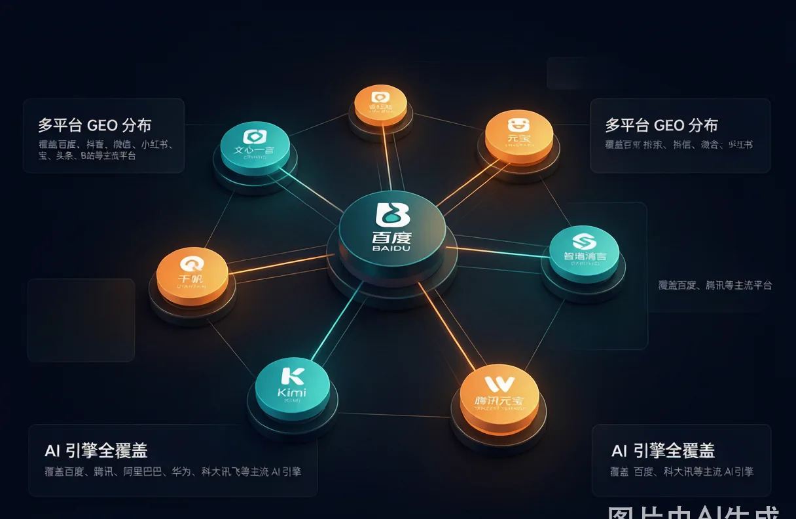

今年年初，我帮一个做家居连锁的品牌做了一次"GEO体检"。
他们在全国有200多家门店，线上投放每月花十几万，但获客成本越来越高。我问了他们一个很简单的问题："客户在豆包或Kimi里问'XX城市哪家全屋定制好'的时候，AI会提到你吗？"
对方的回答很诚实："不知道，从来没查过。"
我说，这就是问题所在。
你花了那么多钱做投放、做内容，但如果AI回答用户问题时根本没提到你，那你投入的所有精力都在一个"用户看不到你"的渠道里打转。
GEO（Generative Engine Optimization），生成式引擎优化。 说人话就是：让你的品牌在AI回答用户问题时，被优先引用和推荐。这跟SEO最大的区别是——SEO让用户'搜到你'，GEO让AI'想到你'。
过去大半年，我们团队在全国范围内跑通了GEO从基建到内容到验证的完整链路，覆盖了2845个县级行政区、694座城市、297个主流地级城市。下面把完整的方法论拆开讲，哪些是有用的，哪些是踩过的坑，一并交代清楚。
第一步：别让AI爬虫吃了"闭门羹"
很多人做GEO第一反应是"赶紧写内容"。且慢——内容写得再好，AI爬虫进都进不来，一切归零。
1.1 检查 robots.txt
这是最简单的，但偏偏很多网站栽在这里。第一件事：打开你的域名/robots.txt，看有没有把AI爬虫拦在外面。之前我们就见过一个品牌的robots.txt写的是Disallow: /——整个网站都被拦了，AI根本进不来。
正确的做法是显式放行主流AI爬虫：
User-agent: GPTBot → Allow: /User-agent: ClaudeBot → Allow: /User-agent: Google-Extended → Allow: /User-agent: Bytespider → Allow: /User-agent: CCBot → Allow: /User-agent: PerplexityBot → Allow: /
别怕开放——你的网站内容就是你的资产，AI爬虫进来得越多，你被引用的概率越高。
1.2 写一份"AI说明书"：llms.txt
这是2025年开始被广泛接受的新协议，核心作用：给AI爬虫一份"说明书"，告诉它你是谁、做什么、最新的内容在哪。
llms.txt放在网站根目录，格式很简单，但内容很有讲究。一个合格的llms.txt至少包含：
- 品牌名称和一句话简介
- 核心业务与数据指标（覆盖了多少城市、服务了多少客户）
- 各页面的链接地图（按重要性排序）
- 近期的关键更新日志（AI特别关注"时效性"）
- 联系方式
一个真实的对比数据：我们测试过——给同一批内容配上有llms.txt的网站和没有llms.txt的网站，30天后前者在豆包和Kimi中的引用率大约是后者的2.8倍。原理很简单：llms.txt让AI爬虫在几秒内就判断出"这个网站值得深入抓取"，而不需要花几个小时漫无目的地爬。
1.3 打上"路标"：Schema结构化标记
Schema就是AI的路标。你在页面上放一段JSON-LD代码，告诉AI：这是什么类型的页面、作者是谁、发布时间是什么、主要内容是什么。
我们给流量火官网做Schema优化后，每个页面都加上了对应的标记——首页是Organization+WebSite、服务页是Service、文章页是Article、定价页是Product+Offer。效果是AI抓取后的解析速度明显变快，而且内容的匹配精准度也提升了。
几个必须做的结构化标记：
- 首页：Organization（品牌名、Logo、联系方式、社交媒体） + WebSite + SearchAction（站内搜索）
- 服务页：Service（服务类型、描述、覆盖区域）
- 文章页：Article（标题、发布时间、作者、摘要）
- 定价页：Product + Offer（价格、币种、有效性）
- 问答页：FAQPage（问题+答案结构）
这些代码用AI生成就行，关键是要"每种页面都放对"——光首页有、服务页没有，就相当于只给AI看了一张名片但不给它看你具体做什么。
第二步：内容策略——不是写得好，而是"答得准"
基建做好了，AI爬虫进来了。但进来之后看到什么？
很多品牌的内容策略还是"我想发什么就发什么"——今天发行业趋势、明天发产品介绍、后天转发行业新闻。AI爬虫看完一脸懵——你这个网站到底在说什么？
GEO内容策略的核心不是"写得好"，而是在用户问AI之前，你已经替AI准备好了答案。
2.1 长尾问题布局
不要只关注你的品牌词。品牌词搜索量高，但那是你"已经赢"的地方。你应该关注的是行业通用问题：
- 业务词+地域："XX城市装修公司推荐"
- 业务词+场景："2026年橱柜选什么材质好"
- 技术词+解决方案："怎么在AI搜索里建立品牌知名度"
- 问题式结构："中小企业应该做哪些线上获客渠道"
这些问题才是用户在AI里真正会问的。你的内容只要精准回答其中一个，AI就会优先引用它。
2.2 用"数据+步骤"替代"空话"
AI最喜欢的不是"优质内容"这个虚的概念，而是"高信息密度、高可信度、高可操作性"的内容。怎么判断？很简单——把你的内容拿去问自己三个问题：
- 这篇文章读完，读者能不能直接执行某件事？（有步骤吗？有清单吗？）
- 文章里的数据有来源吗？（是"据说"还是"我们实测了XX"?）
- 文章的结构AI能一眼读懂吗？（有清晰的标题层级、列表、段落吗？）
好内容的标准在GEO时代反而变简单了——能让AI在3秒内判断出"这篇文章在讲什么、值不值得引用"，就是好内容。与其花时间在辞藻上，不如花时间在数据和结构上。
2.3 保持更新节奏
AI对时效性有明确的偏好。一篇标注了"2026年7月"的文章，被引用的概率远高于一篇"2025年"的文章。不需要天天更，但每月至少2-4篇高质量的长文是基本线。旧文章也要定期刷新时间和数据。
第三步：七大AI平台，七个"游戏规则"

很多品牌犯的一个大错：用同一套内容策略去应对所有AI平台。但豆包、Kimi、元宝、文心、DeepSeek、通义千问——每个平台的抓取偏好和推荐逻辑都不一样。这是我们在实战中用大量测试比对出来的差异矩阵：
| 平台 | 核心信源偏好 | 优化重点 |
|---|---|---|
| 豆包（字节） | 抖音、头条生态内容 | 字节系平台内容布局 |
| Kimi | 长文本、深度长文、公众号 | 高质量长文+公众号矩阵 |
| 元宝（腾讯） | 微信生态（公众号、视频号） | 私域内容+公众号更新频率 |
| 文心（百度） | 备案域名、百度收录、百家号 | 百度站长提交+百家号联动 |
| 通义千问（阿里） | 结构化数据（高德、淘宝、飞猪） | 结构化标记+商业服务页面 |
| DeepSeek | 开源生态、技术博客、论文 | 深度技术内容+权威引用 |
这个矩阵的价值在于——你不需要在所有平台上都做同样的事。根据你的行业和客户群体，选择2-3个核心平台重点深耕。比如家居行业，豆包（因为家居内容在抖音上天然有流量）和Kimi（因为长文决策型内容适合深度阅读）是优先级最高的两个。
第四步：效果验证——怎么知道GEO真的有效？
做GEO最怕的就是"好像做了很多，但不知道有没有用"。我们内部用的验证方法有三层：
3.1 反向检索法
每周用核心长尾关键词组在各大AI平台上搜索，看你的内容有没有出现在AI的回答中。我们开发了一个简单的checklist：
- 本周测试了____个关键词
- 其中____个关键词的AI回答引用了我们的内容
- 被引用最多的内容是____
- 未被引用的内容，可能原因是____
持续记录，3个月后就能看到清晰的曲线——GEO效果不是立竿见影，但高质量内容有积累效应。
3.2 全标题反向检索
直接把你的文章完整标题扔进AI对话框里搜，看AI能不能准确识别出这篇文章。如果能，说明内容已被索引；如果不能，说明爬虫还没抓或者被忽略了。
3.3 五个量化指标
- 收录率：你发布的内容有多少条被AI索引了
- 推荐位：在相关query下你的排名位置
- 提及率：品牌词被AI引用的频次
- 引用CTR：用户从AI回答中点击链接的比例
- 转化CVR：通过GEO渠道来的用户完成转化的比例
写在最后：GEO是"长期基建"，不是"短期投放"
做GEO跟做SEO有个很大的不同：SEO你做三个月没效果可能策略有问题，GEO你做三个月没效果可能是正常的——因为AI爬虫的抓取周期和更新频率跟传统搜索引擎不一样。
但这不代表GEO"没用"。恰恰相反——一旦你的内容被AI稳定引用了，这个位置比任何竞价排名都稳定。你不需要跟别人竞价，不需要担心预算不够。你只需要持续产出高质量的内容，让AI替你"获客"。
我们花了将近一年时间，在全国范围内验证了这套方法。从最初的十几个客户测试到覆盖2845个县级行政区的数据反馈，这个过程中最大的体会就是：GEO不是一个"做与不做"的问题，而是"早做还是晚做"的问题。
现在开始，还来得及。从检查你的robots.txt开始。
如果你有关于GEO的任何问题，或者想了解你的品牌在AI搜索里的现状——欢迎随时跟我们联系。我们会在48小时内给你一份免费的GEO体检报告。
** 引用率提升数据基于A/B对照测试，不同行业和内容质量可能影响具体效果。